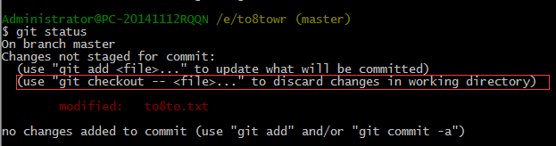
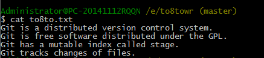
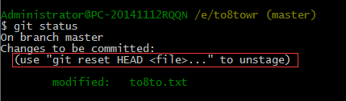
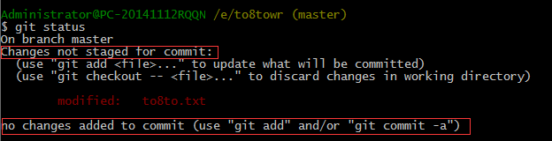

撤销修改
你现在正在赶一份报告，你在to8to.txt里面添加了一行：
Git is a distributed version control system.
Git is free software distributed under the GPL.
Git tracks changes of files.
Git is better than SVN.
在你准备git add之前，感觉不妥。用git status 查看一下：
这时，Git会告诉你，git checkout -- file 可以丢弃工作区的修改，运行 $ git checkout -- to8to.txt 。
（当然，这种小修改也可以直接删掉最后一行，手动把版本恢复到上一个版本的状态。）
运行了 $ git checkout -- to8to.txt 之后，再来看看to8to.txt的内容：
文件果然复原了。
命令 $ git checkout -- to8to.txt意思就是，把to8to.txt文件在工作区的修改全部撤销，这里有两种情况：
一种是to8to.txt自修改后还没有被放到暂存区，现在，撤销修改就回到和版本库一模一样的状态；
一种是to8to.txt已经添加到暂存区后，又作了修改，现在，撤销修改就回到添加到暂存区后的状态。
命令中的$ git checkout -- file 中的 -- 很重要，没有 --，就变成了“创建一个新分支”的命令，我们在后面的分支管理中会再次遇到 git checkout 命令
现在你又写了一行不妥的话，内容如下：
Git is a distributed version control system.
Git is free software distributed under the GPL.
Git has a mutable index called stage.
Git tracks changes of files.
I don’t like Git.
并且git add ,放到了暂存区，然后 git status 查看一下：
Git告诉我们，用命令 $ git reset HEAD file 可以把暂存区的修改撤销掉（unstage），重新放回工作区
我们运行$ git reset HEAD to8to.txt：
Git告诉我们，暂存区是干净的，但是工作区有修改。
还记得如何丢弃工作区的修改吗？
$ git checkout -- to8to.txt
$ git status
世界终于干净了。
现在，假设你不但改错了东西，还从暂存区提交到了版本库，怎么办呢？还记得版本回退一节吗？可以回退到上一个版本。不过，这是有条件的，就是你还没有把自己的本地版本库推送到远程。还记得Git是分布式版本控制系统吗？我们后面会讲到远程版本库
小结：
场景1：当你改乱了工作区某个文件的内容，想直接丢弃工作区的修改时，用命令 $ git checkout -- file
场景2：当你不但改乱了工作区某个文件的内容，还添加到了暂存区时，想丢弃修改，分两步，第一步用命令 $ git reset HEAD file，就回到了场景1，第二步按场景1操作。
场景3：已经提交了不合适的修改到版本库时，想要撤销本次提交，参考版本回退一节，不过前提是没有推送到远程库。